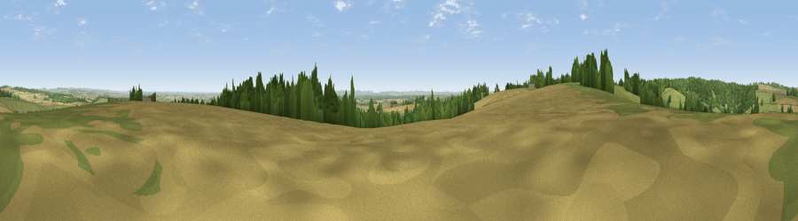

Viewpoint near Winterborne Houghton
#20586 in England · top 39% of its area beats it · near Winterborne Houghton · access?Where it is
The exact computed spot (ST 81475 03425). Click the marker for map links.
Public access: no public right of way or access land is recorded at this exact spot — it may be on private land. Computed from Natural England's CRoW access layer and OpenStreetMap rights of way — not the legal definitive map. Always verify locally.
The view, rendered

A 360° render of this exact spot computed from the terrain model, tree cover and land cover — summer colours, afternoon light, calibrated against photographs of famous viewpoints. Real trees, hedges and buildings will differ in detail.
The panorama
Grey silhouette: terrain skyline in each direction (720 bearings, Earth curvature and refraction included). Dashed green: skyline with trees (+15 m) and buildings (+8 m) as obstacles. Blue strip: how far the ground is visible on each bearing.
Where the view opens
Wedge length = distance to the farthest visible ground on that bearing (vegetation-aware). Rings at 10, 25 and 50 km.
What fills the view
44% cropland · 32% grassland · 23% woodland ·
Angular shares of the visible panorama (visual magnitude), not map area. Landscape diversity 0.49 (0–1 Shannon).
Key numbers
More beautiful places nearby
The staircase of upgrades: each row has a higher view potential than everything closer. Driving times are estimates from straight-line distance, calibrated against real road routing — check an actual route before setting out.
| Place | Direction | Drive | Score |
|---|---|---|---|
| Viewpoint near Milton Abbas | W · 1 km | ~2 min | 64.2 |
| Viewpoint near Ibberton | NW · 4 km | ~9 min | 71.3 |
| Viewpoint near Woolland | WNW · 5 km | ~11 min | 74.5 |
| Viewpoint near Berwick St John | NNE · 21 km | ~35 min | 78.2 |
| East Hill | SSW · 21 km | ~36 min | 79.6 |
| Viewpoint near Owermoigne | SSW · 22 km | ~36 min | 81.0 |
| Chideock Down | S · 22 km | ~37 min | 83.5 |
| Viewpoint near Chaldon Herring | S · 23 km | ~37 min | 83.8 |
50.83006, -2.26440 · source: screening · position refined by local search. Computed location — check access rights before visiting.